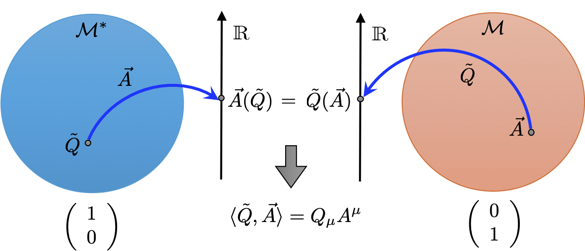
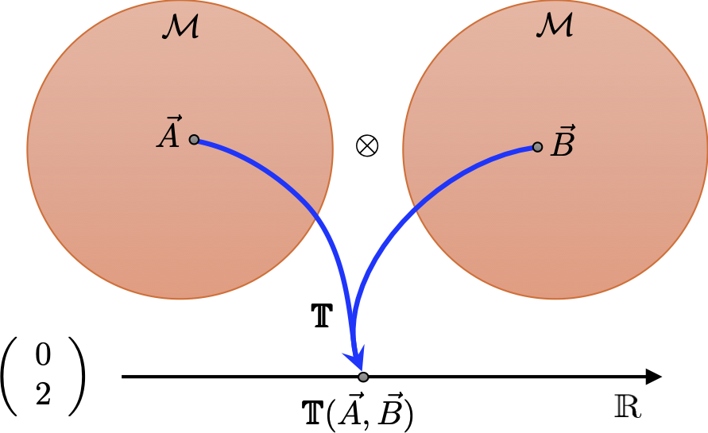
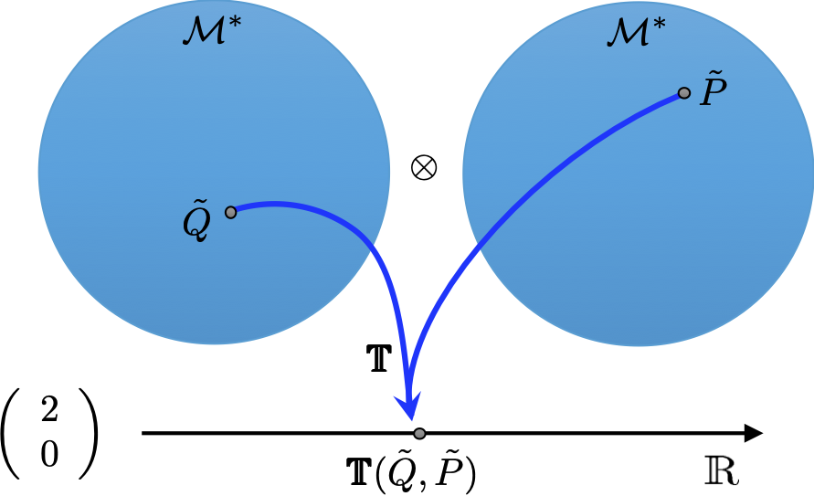
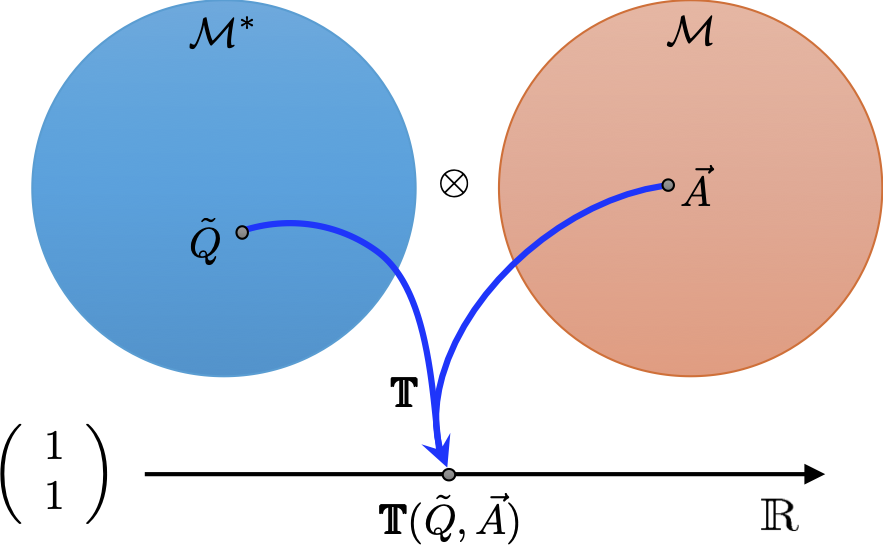
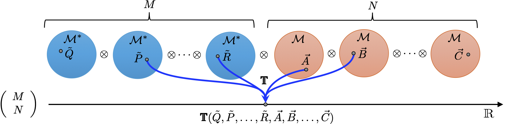

6 Tensors
In this lecture we will meet the most general type of covariant object in the special relativity, the tensor.
6.1 Rank-2 tensors
In the last lecture we expanded our repertoire of geometrical objects by constructing one-forms as linear functionals of 4-vectors. Given one-form \(\tilde{Q}\) and 4-vector \(\vec{A}\) we obtain a Lorentz scalar \(\tilde{Q}(\vec{A})\). The duality of this construction means that we could eqaually view 4-vectors as linear functionals of one-forms, so we get the same Lorentz scalar as \(\vec{A}(\tilde{Q})\). We can write this more symmetrically as \(\langle \tilde{Q}, \vec{A} \rangle\). Pictorially we can view these two objects as:

Using the basis \(\vec{e}_\mu\) spanning the vector space \(\mathcal{M}\) of 4-vectors we have the expansion \[ \vec{A} = A^\mu\vec{e}_\mu. \] The 4-vector basis then generates a biorthonormal basis of one-forms \(\tilde{e}^\mu\) obeying \(\langle \tilde{e}^\mu, \vec{e}_\nu \rangle = \delta^\mu_\nu\), from which one-forms are expanded as \[ \tilde{Q} = Q_\mu\tilde{e}^\mu. \] The contraction is then \(\langle \tilde{Q}, \vec{A} \rangle = Q_\mu A^\mu\).
In this lecture we will generalise this construction to more general objects called tensors. Indeed 4-vectors and one-forms are tensors. Specifically, \[ \begin{align} \textrm{4-vector} &\equiv \left(\begin{array}{c} 1\\ 0\end{array}\right)~{\rm tensor},\\ \textrm{one-form} &\equiv \left(\begin{array}{c} 0\\ 1\end{array}\right)~{\rm tensor},\\ \end{align} \] where the notation \(({M \atop N})\) denotes a tensor with \(M\) upper 4-vector-like indices, or alternatively an object that ‘eats’ \(M\) one-forms, and \(N\) lower one-form-like indices, or eats \(N\) 4-vectors. We will denote a general tensor as \(\pmb{\symbb{T}}\). The next simplest tensor is rank-2 with 2 indices, for example a type \(({0 \atop 2})\) tensor which is a linear functional on two 4-vectors \[ \pmb{\symbb{T}}:\vec{A}\in\mathcal{M},\vec{B}\in\mathcal{M} \mapsto a \in \mathbb{R}, \] and is depicted like this

Just as with 4-vectors and one-forms we can full determine the action of this linear object by acting it on basis 4-vectors for each of the vector spaces \(\mathcal{M}\) it acts on as \[ T_{\alpha\beta} = \pmb{\symbb{T}}(\vec{e}_\alpha,\vec{e}_\beta). \] As expected for a type \(({0 \atop 2})\) tensor its components have two lower indices. To complete the circle, how can these components reconstruct the geometrical object \(\pmb{\symbb{T}}\)? They correspond to how much tensor product basis of one-forms \(\tilde{e}^\alpha\otimes\tilde{e}^\beta\) contribute to \(\pmb{\symbb{T}}\). Notice how \(\tilde{e}^\alpha\) is a type \(({0 \atop 1})\) tensor, as is \(\tilde{e}^\beta\), hence \(\tilde{e}^\alpha\otimes\tilde{e}^\beta\) is an elementary type \(({0 \atop 2})\) tensor. The components \(T_{\alpha\beta}\) then reconstruct the tensor as \[ \pmb{\symbb{T}} = T_{\alpha\beta}\,\tilde{e}^\alpha\otimes\tilde{e}^\beta. \] If we now act \(\pmb{\symbb{T}}\) on two 4-vectors \(\vec{A}\) and \(\vec{B}\) we can explicitly compute this as \[ \begin{align} \pmb{\symbb{T}}(\vec{A},\vec{B}) &= \pmb{\symbb{T}}(A^\mu\vec{e}_\mu,B^\nu\vec{e}_\nu), \qquad\qquad\quad \textrm{expand 4-vectors}\\ &= T_{\alpha\beta}\tilde{e}^\alpha(A^\mu\vec{e}_\mu)\tilde{e}^\beta(B^\nu\vec{e}_\nu), \qquad \textrm{expand tensor}\\ &= T_{\alpha\beta}A^\mu B^\nu\tilde{e}^\alpha(\vec{e}_\mu)\tilde{e}^\beta(\vec{e}_\nu), \qquad \textrm{linearity of one-forms}\\ &= T_{\alpha\beta}A^\mu B^\nu\delta^\alpha_\mu\delta^\beta_\nu, \qquad\qquad\quad~~ \textrm{biorthonormality}\\ &= T_{\alpha\beta}A^\alpha B^\beta. \end{align} \] The final answer is a proper contraction of lower and upper indices which tells us that \(T_{\alpha\beta}A^\alpha B^\beta\) is a Lorentz scalar according to our index rules. This is reassuring since \(\pmb{\symbb{T}}(\vec{A},\vec{B})\) is a geometrical quantity based on abstract objects with no reference to any particular reference frame.
So how do the components of \(\pmb{\symbb{T}}\) transform between inertial frames? Since it has two lower indices we can guess immediately that it must be \[ T_{\bar{\mu}\bar{\nu}} = \Lambda^\alpha_\bar{\mu}\Lambda^\beta_\bar{\nu}T_{\alpha\beta}. \tag{6.1}\] You are now invited to show that if this is true it guarantees that \(\pmb{\symbb{T}}(\vec{A},\vec{B})\) is a Lorentz scalar.
The analogous reasoning applies to a type \(({2 \atop 0})\) tensor which is a linear functional on two one-forms \[ \pmb{\symbb{T}}:\tilde{Q}\in\mathcal{M}^*,\tilde{P}\in\mathcal{M}^* \mapsto a \in \mathbb{R}, \] and is depicted like this

Its components are found by acting it on basis one-forms for each of the vector spaces \(\mathcal{M}^*\) it acts on as \[ T^{\alpha\beta} = \pmb{\symbb{T}}(\tilde{e}^\alpha,\tilde{e}^\beta), \] which then reconstruct it as \[ \pmb{\symbb{T}} = T^{\alpha\beta}\,\vec{e}_\alpha\otimes\vec{e}_\beta. \] Acting \(\pmb{\symbb{T}}\) on two one-forms \(\tilde{Q}\) and \(\tilde{P}\) then gives \[ \pmb{\symbb{T}}(\tilde{Q},\tilde{P}) = T^{\alpha\beta}Q_\alpha P_\beta, \] and this is a Lorentz scalar since the tensor components transform as \[ T^{\bar{\mu}\bar{\nu}} = \Lambda^{\bar{\mu}}_\alpha\Lambda^{\bar{\nu}}_\beta T^{\alpha\beta}. \] This leaves the final possible rank 2 tensor of type \(({1 \atop 1})\) tensor which is a linear functional of one one-form and one 4-vector \[ \pmb{\symbb{T}}:\tilde{Q}\in\mathcal{M}^*,\tilde{P}\in\mathcal{M}^* \mapsto a \in \mathbb{R}, \] and is depicted like this

It is a matter of convention opting to list the one-form first and the 4-vector second. The components of a type \(({1 \atop 1})\) tensor are found by acting it on a basis one-form in \(\mathcal{M}^*\) and basis 4-vector in \(\mathcal{M}\) as \[ {T^{\alpha}}_{\beta} = \pmb{\symbb{T}}(\tilde{e}^\alpha,\vec{e}_\beta). \] An immediate question is why we don’t write the components as \(T^\alpha_{\beta}\) or \(T^{~~\alpha}_{\beta}\). In this current context there is no ambiguity about what the indices refer to so any of these forms can be used. However, issues can arise when we start manipulating indices as we will discuss shortly.
We can reconstruct the tensor as \[ \pmb{\symbb{T}} = {T^{\alpha}}_{\beta}\,\vec{e}_\alpha\otimes\tilde{e}^\beta, \] and acting \(\pmb{\symbb{T}}\) on a one-form \(\tilde{Q}\) and a 4-vector \(\vec{A}\) then gives \[ \pmb{\symbb{T}}(\tilde{Q},\vec{A}) = {T^{\alpha}}_{\beta}Q_\alpha A^\beta. \] This is a Lorentz scalar since the tensor components transform as \[ {T^{\bar{\mu}}}_{\bar{\nu}} = \Lambda^{\bar{\mu}}_\alpha\Lambda^\beta_{\bar{\nu}} {T^\alpha}_\beta. \] Having fully specified rank 2 tensors we should now consider an example of one crucial to special relativity.
6.2 The metric tensor
We have already encountered a type \(({0 \atop 2})\)-tensor in Scalar-product and one-forms in the form of the scalar-product which endows our vector space \(\mathcal{M}\) with concepts of length and orhtogonality. As a nod the general relativity course next year, we will denote the abstract geometrical tensor as \(\pmb{\symbb{g}}\). Formally this tensor is defined as one taking two input 4-vectors \(\vec{A}\) and \(\vec{B}\) and returns their scalar-product as \[ \pmb{\symbb{g}}(\vec{A},\vec{B}) = g_{\mu\nu}A^\mu B^\nu = \vec{A}\cdot\vec{B}. \] From this expression we can immediately identify its components as \[ \pmb{\symbb{g}}(\vec{e}_\mu,\vec{e}_\nu) = g_{\mu\nu} = \eta_{\mu\nu} = \left(\begin{array}{cccc} 1 & 0 & 0 & 0 \\ 0 & -1 & 0 & 0 \\ 0 & 0 & -1 & 0 \\ 0 & 0 & 0 & -1 \end{array}\right), \] as being equal to the Minkowski metric described in Introducing 4-vectors. Consequently, the components of \(\pmb{\symbb{g}}\) transform as \[ g_{\bar\mu\bar\nu} = \Lambda^{\alpha}_{\bar\mu}\Lambda^\beta_{\bar\nu} g_{\alpha\beta} = \Lambda^{\alpha}_{\bar\mu}\Lambda^\beta_{\bar\nu} \eta_{\alpha\beta} = \eta_{\bar\mu\bar\nu}, \] and hence in flat space-time the metric has identical elements equal to the \(\eta\) symbol in all inertial frames, as we saw in Scalar-product and one-forms. Since the scalar-product is symmetric so is the metric tensor as \[ \pmb{\symbb{g}}(\vec{A},\vec{B}) = \pmb{\symbb{g}}(\vec{B},\vec{A}) \implies g_{\mu\nu} = g_{\nu\mu}. \] The inverse metric tensor, denoted \(\pmb{\symbb{g}}^{-1}\), is a \(({2 \atop 0})\)-type tensor defined to take two input one-forms \(\tilde{Q}\) and \(\tilde{P}\) and return their scalar-product \[ \pmb{\symbb{g}}^{-1}(\tilde{Q},\tilde{P}) = g^{\mu\nu}Q_\mu P_\nu = \tilde{Q}\cdot\tilde{P}. \] Hence it is also symmetric with elements \[ \pmb{\symbb{g}}^{-1}(\tilde{e}_\mu,\tilde{e}_\nu) = g^{\mu\nu} = \eta^{\mu\nu} = \left(\begin{array}{cccc} 1 & 0 & 0 & 0 \\ 0 & -1 & 0 & 0 \\ 0 & 0 & -1 & 0 \\ 0 & 0 & 0 & -1 \end{array}\right). \] The metric and its inverse have identical components in every inertial frame. The reason we denote \(\pmb{\symbb{g}}^{-1}\) as the inverse of \(\pmb{\symbb{g}}\) is that their components obey \[ g^{\mu\alpha}g_{\alpha\nu} = g_{\nu\alpha}g^{\alpha\mu} = \delta^\mu_\nu, \] which converted into a matrix expressions give \[ \sum_{\alpha=0}^3[\underline{\underline g}^{-1}]_{\mu\alpha}[\underline{\underline g}]_{\alpha\nu} = [\underline{\underline g}^{-1}\, \underline{\underline g}]_{\mu\nu} = \sum_{\alpha=0}^3[\underline{\underline g}]_{\nu\alpha}[\underline{\underline g}^{-1}]_{\alpha\mu} = [\underline{\underline g}\, \underline{\underline g}^{-1}]_{\nu\mu}. \] However, we know that both \(\underline{\underline g}^{-1} = \underline{\underline \eta}\) and \(\underline{\underline g} = \underline{\underline \eta}\), while \(\underline{\underline \eta} = \underline{\underline \eta}^{\rm T} = \underline{\underline \eta}^{-1}\), and so \(\underline{\underline \eta}\, \underline{\underline \eta} = \mathbb{1}\) hence \[ [\underline{\underline g}^{-1}\, \underline{\underline g}]_{\mu\nu} = [\underline{\underline g}\, \underline{\underline g}^{-1}]_{\nu\mu} = [\mathbb{1}]_{\mu\nu}, \] as required for an inverse. This property is crucial for a key use of the metric we now introduce.
6.3 Raising and lowering indices
Armed with the metric tensor \(\pmb{\symbb{g}}\) and its inverse \(\pmb{\symbb{g}}^{-1}\) we can convert 4-vectors into one-forms and vice versa. Suppose we took a 4-vector \(\vec{V}\) and inserted it into the first slot of the metric as \(\pmb{\symbb{g}}(\vec{V},\cdot)\), but left the second slot free. Since \(\pmb{\symbb{g}}\) is symmetric it doesn’t matter which slot we filled or left empty. What remains is a linear object which eats a 4-vector and returns a scalar, or in otherwords a one-form \[ \tilde{V} = \pmb{\symbb{g}}(\vec{V},\cdot). \] We have used the metric to make one-form version of \(\vec{V}\). The components of this object follows as \[ \tilde{V}(\vec{e}_\mu) = \pmb{\symbb{g}}(\vec{V},\vec{e}_\mu) = V^\nu\pmb{\symbb{g}}(\vec{e}_\nu,\vec{e}_\mu) = V^\nu\eta_{\nu\mu} = V_\mu. \] Notationally we say we have lowered the index of \(V^\nu\) to \(V_\mu\) by using the metric. What this really means is that we contract \(V^\nu\) with \(\eta_{\nu\mu}\), so if we represent the components as a column vector then \[ V^\nu = \left( \begin{array}{c} a \\ b \\ c \\ d \end{array}\right) \quad \mapsto \quad V_\mu = \left( \begin{array}{c} a \\ -b \\ -c \\ -d \end{array}\right). \] By construction the action on \(\tilde{V}\) on any other 4-vector \(\vec{A}\) is to return the scalar-product of it with \(\vec{V}\) since \[ \tilde{V}(\vec{A}) = V_\mu A^\mu = \eta_{\mu\nu}V^\nu A^\mu = \vec{V}\cdot\vec{A}. \]
In the same way we can use \(\pmb{\symbb{g}}^{-1}\) to convert a one-form \(\tilde{Q}\) into a 4-vector as \[ \vec{Q} = \pmb{\symbb{g}}^{-1}(\tilde{Q},\cdot). \] which has components \[ \vec{Q}(\tilde{e}^\mu) = \pmb{\symbb{g}}^{-1}(\tilde{Q},\tilde{e}^\mu) = Q_\nu\pmb{\symbb{g}}^{-1}(\tilde{e}^\nu,\tilde{e}^\mu) = Q_\nu\eta^{\nu\mu}, \] suggesting we have now raised the index of \(Q_\nu\) to \(Q^\mu\) with \(\eta^{\nu\mu}\) meaning \[ Q_\nu = \left( \begin{array}{c} a \\ b \\ c \\ d \end{array}\right) \quad \mapsto \quad Q^\mu = \left( \begin{array}{c} a \\ -b \\ -c \\ -d \end{array}\right). \] We now see why we \(\pmb{\symbb{g}}^{-1}\) is called the inverse metric since it reverses the index lowering performed by \(\pmb{\symbb{g}}\) as \[ \vec{V} = \pmb{\symbb{g}}^{-1}(\tilde{V},\cdot). \] This is demonstrated by considering the components \[ \pmb{\symbb{g}}^{-1}(\tilde{V},\tilde{e}^\mu) = V_\nu\,\pmb{\symbb{g}}^{-1}(\tilde{e}^\nu,\tilde{e}^\mu) = V^\alpha\eta_{\alpha\nu}\eta^{\nu\mu} = V^\alpha \delta^\mu_\alpha = V^\mu, \] after using the identity \(\eta_{\alpha\nu}\eta^{\nu\mu} = \delta^\mu_\alpha\). Similarly, \(\pmb{\symbb{g}}(\vec{Q},\cdot) = \tilde{Q}\).
Using the metric and its inverse to raise and lower indices is more than just an algebraic trick. Indeed one could envisage using any symmetric invertible type \(({0 \atop 2})\) tensor \(h_{\mu\nu}\) and its inverse \(h^{\mu\nu}\) type \(({2 \atop 0})\) tensor to define index raising and lowering. Formally all the above definitions could be applied with \(\pmb{\symbb{h}}\) instead. However, the Lorentz scalars resulting from contractions with \(\pmb{\symbb{h}}\) have no obvious physical meaning or significance. In contrast \(\pmb{\symbb{g}}\) is central to the geometrical structure of space-time defining the scalar-product, so distances, time and angles, as well as its causal properties such as the light-cone and geodesics. As we shall see in the next lecture physical quantities of intrinsic interest arise from the scalar-product. So \(\pmb{\symbb{g}}\) is not just a invertible rank-2 tensor, it is a unique and privileged one with both geometrical and physical meaning. In the context of a flat space-time in special relativity we also have the added bonus that \(\pmb{\symbb{g}}\) and \(\pmb{\symbb{g}}^{-1}\) have the same fixed components in all inertial frames making index lowering and raising extremely straightforward.
Recall that the basis 4-vectors and one-forms are related to each other through the biorthonormality relation \[ \tilde{e}^\mu(\vec{e}_\nu) = \delta^\mu_\nu. \] So one might ask what one-form is generated by converting a basis 4-vector using the metric? We get \[ \pmb{\symbb{g}}(\vec{e}_\alpha,\cdot) = \eta_{\mu\nu}\tilde{e}^\mu(\vec{e}_\alpha)\otimes\tilde{e}^\nu = \eta_{\mu\nu}\delta^\mu_\alpha\tilde{e}_\nu = \eta_{\alpha\nu}\tilde{e}^\nu. \] The one-form \(\pmb{\symbb{g}}(\vec{e}_\alpha,\cdot)\) is not simply \(\tilde{e}^\alpha\). Even with the simple flat space-time metric considered in this course there can be a sign difference, e.g. \(\pmb{\symbb{g}}(\vec{e}_1,\cdot) = -\tilde{e}^1\). In general relativity, where the metric can be non-diagonal, these two one-forms are completely different.
6.4 Higher rank tensors
All our earlier work on rank-2 tensors can be readily generalised to higher ranks ones, specifically rank-\(M+N\) tensor \(\pmb{\symbb{T}}\) of type \(({M \atop N})\). This object takes \(M\) input one-forms \(\tilde{Q},\tilde{P},\dots,\tilde{R}\) and \(N\) input 4-vectors \(\vec{A},\vec{B},\dots,\vec{C}\) and maps them all to a scalar \[ \pmb{\symbb{T}}(\tilde{Q},\tilde{P},\dots,\tilde{R},\vec{A},\vec{B},\dots,\vec{C}) \mapsto \mathbb{R} \] as depicted in this figure:

As before we extract its components by acting it on an appropriate number of basis one-forms and 4-vectors as \[ {T^{\alpha\beta\cdots\gamma}}_{\mu\nu\cdots\sigma} = \pmb{\symbb{T}}(\tilde{e}^\alpha,\tilde{e}^\beta,\dots,\tilde{e}^\gamma,\vec{e}_\mu,\vec{e}_\nu,\dots,\vec{e}_\sigma). \tag{6.2}\] These components transform between frames \(S\) and \(\bar S\) as \[ {T^{\bar{\omega}\bar{\chi}\cdots\bar{\theta}}}_{\bar{\rho}\bar{\lambda}\cdots\bar{\kappa}} = \Lambda^{\bar \omega}_\alpha\Lambda^{\bar \chi}_\beta\cdots\Lambda^{\bar \theta}_\gamma\Lambda^{\mu}_{\bar \rho}\Lambda^{\nu}_{\bar \lambda}\cdots\Lambda^{\sigma}_{\bar \kappa}\,{T^{\alpha\beta\cdots\gamma}}_{\mu\nu\cdots\sigma}. \] Indeed, any object whose components transform between frames like this is a type \(({M \atop N})\) tensor.
It is worth remarking on the notation used in Equation 6.2. Specifically, why can’t we just write the indices more compactly as \[ {T^{\alpha\beta\cdots\gamma}}_{\mu\nu\cdots\sigma} \stackrel{?}{\equiv} T^{\alpha\beta\cdots\gamma}_{\mu\nu\cdots\sigma}. \] The short answer is that you can, but you should be careful. As shown in figure above, the tensor \(\pmb{\symbb{T}}\) is taken to be acting on a tensor product of the \(\mathcal{M}^*\) and \(\mathcal{M}\). The ordering matters since it indicates which of these spaces is being acted on. The compact form ensures that we can still identify the ordering of all upper and lower indices between themselves, but does not track the ordering between upper and lower indices. For the tensor \(\pmb{\symbb{T}}\) this is fine since upper and lower indices correspond to distinct types of vectors spaces making it unambigious what is meant.
The situation where care must be taken is when indices are lowered and raised thus inchanging upper and lower indices. Take the example of a type \(({2 \atop 1})\) tensor with components \(T^{\alpha\beta}_\gamma\) written compactly. The index \(\alpha\) can be lowered as \[ T^{\beta}_{\gamma\mu} = \eta_{\mu\alpha}T^{\alpha\beta}_\gamma, \] whereupon we need to make a choice about where to put the new lower index. Above we have used a convention of placing any new upper or lower index at the back. Now suppose we raise the \(\mu\) index back up as \[ T^{\beta\alpha}_{\gamma} = \eta^{\alpha\mu}T^{\beta}_{\gamma\mu}. \] Now the ordering of the upper indices is reversed. This is not a fatal problem but it could be potentially confusing.
A way around this is to retain the full ordering of the tensor product by stacking upper and lower indices separately. Now no convention is required when lowering or raising and the ordering of indices is always unambiguous, e.g. \[ {{T_{\mu}}^{\beta}}_{\gamma} = \eta_{\mu\alpha}{T^{\alpha\beta}}_\gamma, \] meaning the raising of the \(\mu\) index recovers the original tensor \[ {T^{\alpha\beta}}_{\gamma} = \eta^{\alpha\mu}{{T_{\mu}}^{\beta}}_{\gamma}. \] For clarity we will always use this full ordering of indices, but you may well see the more compact version in textbooks.
6.5 Physics is tensorial
We should remind ourselves why we have developed the formalism of tensors. Back in first lecture Principle of relativity we stated is that the laws of physics should not depend on what coordinate system or reference frame we choose to describe them in. Tensors are precisely the mathematical objects whose components transform in such a way that the relations between them remain invariant under any smooth change of coordinates. We can therefore make our principle of relativity from earlier more precise:
This means that we should construct or identify physical quantities in our theories as Lorentz scalars, 4-vectors, one-forms and tensors. Typically we may construct a tensor from other objects like \[ {\pmb{\symbb{T}}} = n\,\vec{U}\otimes\vec{U} + p\,\pmb{\symbb{g}}^{-1}, \] where \(n,p\) are Lorentz scalars, \(\vec{U}\) is a 4-vector and \(\pmb{\symbb{g}}^{-1}\) is the inverse metric. Often Lorentz scalars formed from the contraction these quantities, say like \[ \tilde{K}(\vec{X}) \quad {\rm or} \quad \vec{P}\cdot\vec{X} \quad {\rm or} \quad {\pmb{\symbb{W}}}(\tilde{K},\vec{P},\vec{X}), \] will play a central role, as we will see in the next lecture.
While it is essential that all these quantities are geometrical in practise when doing calculations we will work with an explicit representation in terms of components of some inertial frame, so we have \[ K_\mu X^\mu \quad {\rm or} \quad \eta_{\mu\nu}P^\mu X^\nu \quad {\rm or} \quad {W^\mu}_{\alpha\beta} K_\mu P^\alpha X^\beta. \] We can use the index formulation for all quantities, along with the appropriate rules for contraction and transformations, safe in the knowledge that we are faithfully describing the underlying abstract geometrical objects of the theory. For this reason we will have little use for the basis 4-vectors \(\vec{e}_\mu\) and one-forms \(\tilde{e}^\nu\) or explicit tensor product \(\otimes\) from this point on, but will appreciate they are hiding behind the scenes of our working.